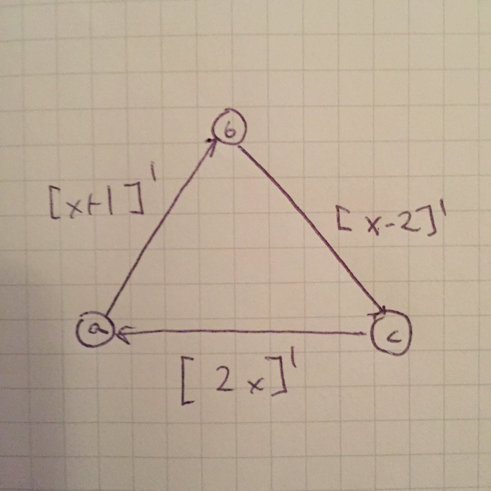
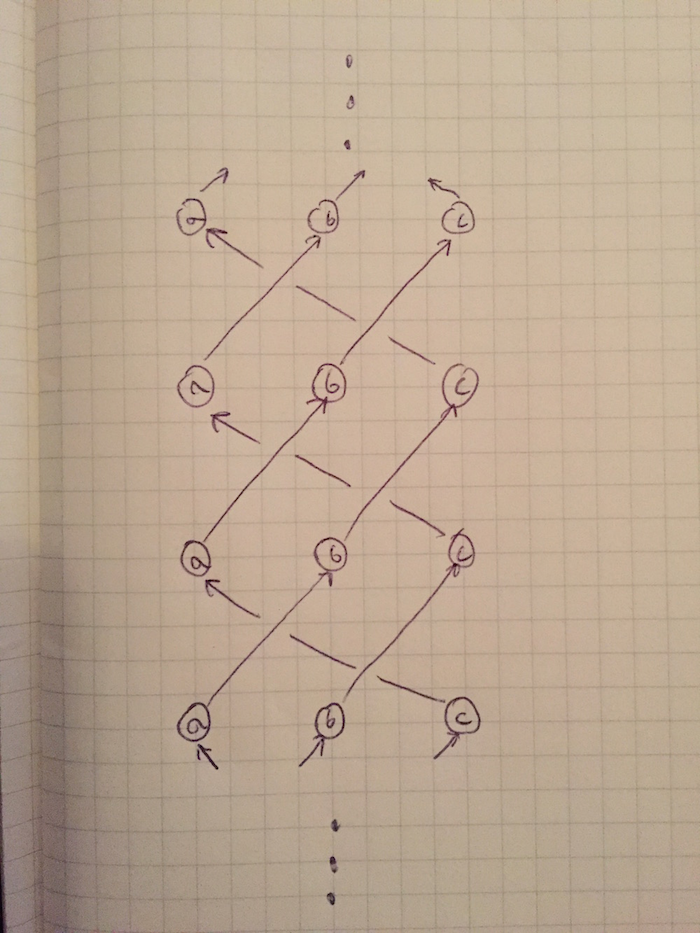

<link rel="import" href="../bower_components/polymer/polymer.html">


<dom-module id="h-post3">
<style>
	#container{
		height: auto;
	}
	.block{
		font: 17px "Helvetica neue";
		margin: 0 auto;
		max-width: 700px;
		padding: 0px;
		overflow: hidden;
		border-right: 0px solid rgba(0,0,0,.9);
		border-left: 0px solid rgba(0,0,0,.9);
		padding-top: 0px;
		padding-bottom:20px;
		padding-left: 40px;
		padding-right: 40px;
		text-align: center;
		height:auto;
	}
	.block p{
		text-align: left;
		letter-spacing: 0px;
		line-height: 145%;
	}
	.block span {
    	float: left;
	    width: 0.7em;
	    font-size: 320%;
	    font-weight: 200;
	    line-height: 97%;
	    margin-bottom: -5px;
	}
	#title-container{
		width: 100%;
		text-align: left;
	}
	#section-title{
		font: 32px "Helvetica neue";
		text-align: left;
		display: inline-block;
		font-weight: 200;
	}
	#section-date{
		font: 32px "Helvetica neue";
		color:rgb(150,150,150);
		font-weight: 200;
		text-align: left;
		display: inline-block;
		margin-right: 5px;
	}
	.tech{
		vertical-align: top;
		display: inline-block;
	}
	.block h2{
		font: 17px "Helvetica neue";
		margin-top: 8px;
		margin-bottom:0px;
		letter-spacing: 0px;
	}
	.final-space{
		width: 100%;
		height:8px;
	}
	.page{
		margin:0;
		margin-top: 20px;
		width: 100%;
		height: 100%;
		background: white;
		z-index: 999;
	}
	.mid{

		display: inline-block;
		width: auto;
	}
	.block{
		display: block;
	}
	#cable1{
		margin-top: -100px;
		margin-right: calc(50%);
	}
	#cable2{
		margin-top: -40px;
		margin-left: calc(50%);
	}
	#node1{
		margin-top: -30px;
		margin-left: calc(50% - 123px);
	}
	#node2{
		margin-top: -30px;
		margin-left: calc(50% + 30px);
	}
	#node3{
		margin-top: -144px;
	}
	#space{
		margin-top: 140px;
	}
	#val_table{
		display: inline-block;
		border-style: solid;
		border: 1px;
		border-collapse: collapse;
	}
	#bar{
		width: 100%;
		height: 1px;
		background: black;
		display: block;
		margin-top: 0px;
		margin-bottom:0px;	}
	.picture {
		width: 50%;
	}

</style>
<template>
	<div class = "block" id = container>
		<!--12/20-->
		<div id="title-container">
		<div id= "section-date">
		1/7
		</div>
		<div id ="section-title">
		Time Expansions
		</div>
		<div class ="tech">
		t
		</div>
		</div>

		<div id="bar"></div>
		
		<div id = "content">
		<p><span>L</span>ast time, I claimed that my example network really defined three independent processes. Let's look at this network again:</p>
		
		<p>When I say that this network consists of three distinct, independent computations, I mean that node  at time  doesn't care about the value of node  at time . In fact, changing node  at time  has no effect on two thirds of the network's values moving forward. To make this clearer, we'll introduce a directed graph that depends on the network's topology and temporal structure called the time expansion of an abstract network N.</p>
		<p> The set of nodes in the time expansion is , where  is the set of nodes in  (excuse the sloppy notation). Then, there is an edge from  to  if there exists a cable from  to  with latency . Here's the time expansion for the network we looked at last time:
		</p>
		
		<p>Notice that this time expansion is actually the union of three disjoint directed graphs. Each of these disjoint graphs is an independent "process" not depending on the states of the other two. This may have been obvious in our toy example, but for more complicated networks, time expansions are a useful tool for elucidating temporal state dependencies. 
		</p>
		<p>One more word: In studying Ian Goodfellow, Yoshua Bengio and Aaron Courville's Deep Learning textbook, I've learned that these networks and expansions are used quite frequently (though maybe they aren't studied in an abstract setting). I'll probably stop thinking about them for a while and focus more intensively on studying modern neural networks and machine learning. However, here's a straightforward theorem you can think about if you're interested: If you have a directionally connected abstract network and there are two cycles with relatively prime latencies, then the time expansion is fully connected. By directionally connected, I mean that there is a path (following the direction of the edges) between any two nodes of the graph. By fully connected, I mean the same thing excluding concern for each edge's directionaliity.
		</p>
		</div>
		<div id="bar"></div>
	</div>

</template>

<script>
	Polymer({
	  is: "h-post3",
	  ready:function(){
	  	var content = this.$.content;
	  	//content.style.height = "500px";
	  }
	});
</script>

</dom-module>